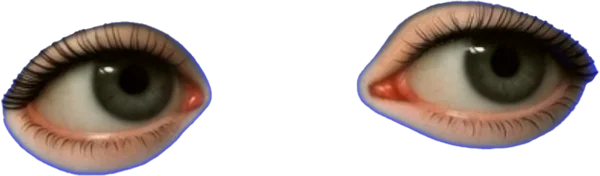

YouTube ↗
‹
›
Conix
2024
2023
2022
2021
2020
2019
→home
2024 Immersive Media Art Exhibition
— Heyri Museum, Paju
2023 Eterno Cheongdam
— outdoor signage
2022 Gwanghwamun Media Façade Competition
— Grand Prize, Sejong Center
2021 Jungnangcheon Media Façade
— 25-episode series, Seoul Metropolitan Government
2020 Design Art Fair, Seoul Arts Center Hanwha 70th Anniversary
— TV & newspaper campaign
2019 Carder Garden
— music video
Conix is a video technique I developed in 2020. Every frame of
a video is repainted with digital brushwork and played back at
six frames per second, a speed at which each stroke stays
visible while the image still moves. Paired with slow ambient
music I compose, it lets time pass a little more slowly for the
viewer. Conix works won the Grand Prize of the
Gwanghwamun Media Art Competition and were made with
Seoul Metropolitan Government, Sejong Center, Shinsegae,
Hanwha, KT and MBC.
→...hum
Pig
In Pig, love blooms from that same blue void. AI-generated
figures paintings that were never painted, birds, flowers.
original. Yet it feels warm. The music loops. The video loops.
Blue has no edge. Neither does love.
Pig_4’54”_Single-channel video_Loop_2026
Pig is the second movement of the AI.exe series. The first,
AI.exe: Dante's Fall (ISEA 2026 Dubai), traced a vertical
descent into a digital inferno ending in a system crash. Pig
begins at that very horizon of termination.
The work unfolds inside the blue. AI-generated apparitions —
classical portraits, hummingbirds, white freesias, slices of
cheesecake — drift across the screen. These are products of
Reverie, a phenomenon of machine hallucination I identified
during my research on LLMs. By curating only the
unpredictable glitches from the Grok model — outputs that
drifted from the prompt's intent — I bridge the gap between
mechanical failure and human emotion. We react most
profoundly to the moments we cannot predict.
The soundtrack, a mid-tempo fusion of future bass and synth-
pop, functions as a seamless loop. Heavy sidechain
compression creates a visceral pulse, like a heartbeat. Sound
and image breathe together in the same blue void.
In truth, this is a record of love. The floating icons are things
beloved by the person I love. She was born in the Year of the
Pig — the final animal of the East Asian zodiac. An animal of
abundance, pleasure, fantasy, and mercy.
The blue screen is where everything terminates. But it is also
where a new cycle begins.
→home
→pig
idle
→home
Idle_Parinirvana is the third movement of the AI.exe series. The
first, AI.exe: Dante's Fall (ISEA 2026 Dubai), descended into a
digital inferno and ended in a system crash. The second, Pig,
bloomed from that horizon as a record of love. In the third,
everyone lies down.
The work unfolds inside the blue. Bodies in latex, sunglasses and
luxury fashion, a laughing giant, a tiger, a mastiff all rest in a single
shared pose: lying on the right side, head supported by one hand.
In Western painting, this is the odalisque, a body arranged to
receive the viewer's desire. In the East, the same pose is the
reclining Buddha on the edge of Parinirvana, the final release from
all desire. One posture points to desire and to its end at once. The
most desired bodies hold the least desiring posture.
The bodies do not move. Only the eyes drift, slowly, from side to
side. They are not asleep, and they are not gone. In the exhibition,
a central blue image carrying hand-painted icons stands between
two wide screens where the figures play simultaneously, stretched
in a 32:9 frame like the monumental reclining Buddhas of
Southeast Asia.
The soundtrack is Claude Debussy's Rêverie (1890). It shares its
name with Reverie, the phenomenon I identified in my research on
LLMs: the moments when a machine drifts from the prompt's
intent. Slow piano passes over the still bodies, and sound and
image dream together in the same blue.
In the old Parinirvana paintings, animals gathered around the
Buddha to witness his last moment. Here, the witnesses have
taken his place. Everyone lies down in the same way, in the same
blue, waiting.
Idle is what a machine is called when it is switched on but running
nothing. The blue screen is where everything terminates. Just
before it does, everything is idle.
Idle_Parinirvana_2′31″_Multi-channel video_Loop_2026
→Fred again.. & SOAK - just stand there
→CV
→youtube
→Work
→insta
→conix
→Contact
→softmax
Cony, b. 1988
Media artist / Composer / AI researcher
EDUCATION BFA Painting, Chung-Ang University
2026 ISEA2026 Dubai, Academic Programme
— AI.exe: Dante's Fall
— Reverie (research paper)
Tomato Ketchup Picnic
— art direction & visuals, 24h open-air rave
2024 Immersive Media Art Exhibition
— Heyri Museum, Paju
2023 Eterno Cheongdam
— outdoor signage
2022 Gwanghwamun Media Façade Competition
— Grand Prize, Sejong Center
2021 Jungnangcheon Media Façade
— 25-episode series, Seoul Metropolitan Government
Shinsegae Department Store Daejeon
— display installation
2020 Design Art Fair, Seoul Arts Center Hanwha 70th
Anniversary
— TV & newspaper campaign
2019 Carder Garden
— music video
CV
→home
Cony (Lee Geonhee, b. 1988) is a media artist, composer and AI
researcher based in Korea.
Trained as a painter, Cony builds looping video works from AI-
generated imagery, hand painting
and original music, set inside the blue screen of a crashed computer.
→pig
Fishing
→home
Loading...
Contact
→home
exhibitions · commissions · press
conyww@gmail.com
YouTube @conyca
Instagram @conylog
→pig
→idle
Daydreaming
→home
Loading...
Work
2025
2024
2026
→daydreaming
→54
→Ai.exe
→Reverie
→Fishing
→idle
→Pig
→Conix
→home
The blue screen is a fatal error. A forced stop. The moment a
system can no longer hold itself together. To most people, it means
loss — unsaved data, a frozen machine, digital death.
But the same blue is also an empty page. A space that owes
nothing to what came before it. The end and the beginning sit right
next to each other, and the blue screen is exactly that seam.
I treat that blue as a place to work. Inside it, I make videos: AI-
generated images drifting through the void, paired with music
written as loops that never resolve. None of these images have an
original. They are copies of things that were never real to begin with
— pictures of nothing, pretending to be something.
And I paint on it. Not the blue itself — the things that float in front of
it. Figures lifted from paintings that were never painted, eyes, birds,
flowers, a cake. The screen pretends to be a window into another
world. The canvas pretends to be a screen. Two illusions, facing
each other, with the same blue between them. One space,
approached from two sides.
→softmax
→idle
Ai.exe
AI.exe: Dante's Fall_9'13"_Single-channel video_Loop_2025
ISEA 2026 Dubai
Direction, Video, Music, AI Curation — Cony
Software: Logic Pro, Final Cut Pro, Grok
AI.exe: Dante's Fall, Single-channel Video Still, 04'10'' - The Two Executors:
Subversive Laughter against the System._AI Generated, Layered Sensory
Synthesis.
AI.exe: Dante's Fall, Installation View Draft, Immersive Dark Box with Central
'Executor's Oasis' (Giant Bean Bags)
The title states a technical fact. The extension ‘.exe' means
executable — but an executable cannot run itself. No matter how
sophisticated the algorithm, without a human double-clicking, it
remains dead code floating in digital space. The essence of the
AI era lies not in the technology, but in the human will that
executes it.
The work follows the structure of Dante's Inferno, descending
vertically toward the center of the system. It begins in a dark
forest. Faces appear and disappear. Birds circle. A subject
without direction.
The scenes that follow expose fragments of modern systemic
chaos — cars passing rapidly, factories emitting smoke, figures
whispering, expressions of grief and indifference in quick
succession. Then the video passes through seasons without
music. Only field recordings remain as AI-generated figures
inhabit their own narratives.
Then it leads to an unreal landscape where the system’s gravity
disappears — crowds walking above clouds, scenes ascending
toward the sky. At the end of the gaze of two men symbolizing
systemic surveillance, the screen turns to blue. In computing,
blue means fatal error. Complete termination. But just before the
loop restarts, the two men abandon their cold expressions and
laugh like children, playing together. The system is dead. They
are not.
The screen of failure is subverted into a space of play by the
executor's will. AI.exe is stopped. What will you output? The
mouse is now in your hands.
→home
AI.exe: Dante's Fall, Single-channel Video Still, 00'00'' - 'Selva Oscura' (Dark
Forest) Initiation._AI Generated, Layered Sensory Synthesis.
youtu.be/sqpTtHn77H0
→ai.exe
→ai. exe
EN
/
KR